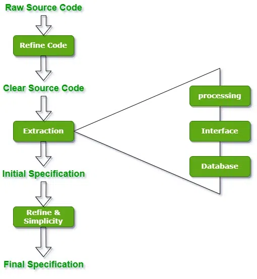
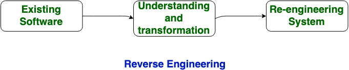
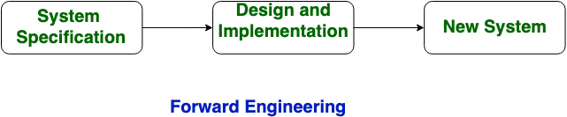

10.7 Reverse Engineering
Reverse engineering (also called back engineering) is the process of analysing existing software to recover design information and requirements from source code or executables. It is a critical step within the re-engineering process — see §10.6 Software Re-engineering — and supports reuse decisions described in §12.1 Reusability.
Definition
- Reverse engineering recovers design models, data structures, control flow, and functional specifications from existing code through systematic analysis.
- It moves from implementation (code) back to design and requirements — the opposite direction of normal forward engineering.
- Reverse engineering does not modify the software; it produces documentation and models that enable informed maintenance, re-engineering, or reuse decisions.
- It is also called back engineering because it reverses the usual development direction.

Why reverse engineering is needed
- Lost documentation: Original design documents were never created or have been lost over the system's lifetime.
- Maintenance assistance: Maintainers need to understand module interactions and data flows before making safe changes.
- Reuse: Identifying reusable components within legacy systems for incorporation into new products — see §12.1.
- Discover flaws: Analysis may reveal design defects, security vulnerabilities, or logic errors not visible from user-level testing.
- Security analysis: Examining code for vulnerabilities, backdoors, or compliance violations in third-party or legacy components.

Eight steps of reverse engineering
- Collect information: Gather all available source code, executables, documentation, and stakeholder knowledge about the system.
- Examine: Review the collected material to understand overall system scope, technology stack, and major components.
- Extract structure: Identify modules, classes, procedures, and their hierarchical relationships using static analysis tools.
- Record functionality: Document what each module or component does — its inputs, outputs, and processing logic.
- Record data flow: Map how data moves between modules — data dictionaries, variable usage, and inter-module data passing.
- Record control flow: Document decision points, loops, and call sequences that govern program execution paths.
- Review recovered design: Validate the recovered models against known behaviour, test cases, and stakeholder knowledge.
- Generate documentation: Produce formal design documents, structure charts, DFDs, or UML diagrams from the recovered information.
Forward vs reverse engineering

| Aspect | Forward Engineering | Reverse Engineering |
|---|---|---|
| Direction | Requirements → Design → Code | Code → Design → Requirements |
| Starting point | Requirements specification | Existing source code or executables |
| Output | Working software product | Design models and documentation |
| Modifies software | Yes — creates or extends code | No — analyses existing code without modification |
| When used | Normal development and re-engineering implementation phase | Legacy system analysis, maintenance, re-engineering analysis phase |
| Tools | IDEs, compilers, CASE tools for design | Static analysers, decompilers, Rigi, Bunch, GEN++ |
| Goal | Build a system that meets requirements | Understand an existing system to enable maintenance or transformation |
Data reverse engineering
- Program level: Recovering internal data structures — records, arrays, linked lists, and object attributes — from source code analysis.
- System level: Recovering file layouts, database schemas, and inter-system data exchange formats from files, DBMS catalogues, and log analysis.
- Data reverse engineering is essential before data reconstruction in the re-engineering process — see §10.6 Step 5.
Processing reverse engineering
- Processing reverse engineering recovers the computational logic and control structures of a system at multiple levels of abstraction.
- Levels of abstraction: Machine code → assembly → source code → module structure → architectural design.
- Component analysis: Identifies individual processing components, their interfaces, and dependencies within the overall system architecture.
- Automated tools traverse call graphs and dependency trees to build structure models from large codebases.
Reverse engineering tools
- Rigi: Visualisation tool for extracting and displaying software structure from source code — builds dependency graphs.
- Bunch: Clustering tool that groups related modules to reveal architectural layers in unstructured code.
- GEN++: Generates C++ class hierarchy and relationship diagrams from existing C++ source code.
- PBS (Portable Bookkeeper System): Tracks software metrics and structure across large multi-language codebases.
- CIAO: Component-based analysis tool for understanding object-oriented system architecture and dependencies.
- Modern equivalents include static analysers (SonarQube, Understand), decompilers, and architecture discovery tools integrated into IDEs.
Reverse engineering in the re-engineering process
- Reverse engineering is Step 3 of the six-step re-engineering process — it provides the design input for code and data reconstruction.
- Without reverse engineering, re-engineering teams operate blind — making structural changes without understanding existing dependencies.
- Recovered documentation from reverse engineering feeds directly into forward engineering during the re-engineering implementation phase.
Reverse engineering steps
reverse_engineering_steps.pseudo
// Eight-step reverse engineering process
STEP 1: COLLECT_INFORMATION
gather source code, executables, existing docs, stakeholder input
STEP 2: EXAMINE
review materials; identify technology stack, scope, major components
STEP 3: EXTRACT_STRUCTURE
use static analysis → module hierarchy, class diagrams, call graphs
STEP 4: RECORD_FUNCTIONALITY
FOR each module DO
document inputs, outputs, processing logic
END FOR
STEP 5: RECORD_DATA_FLOW
map data dictionaries, inter-module data passing, file/DB schemas
STEP 6: RECORD_CONTROL_FLOW
document decisions, loops, call sequences, state transitions
STEP 7: REVIEW_DESIGN
validate recovered models against known behaviour and test cases
STEP 8: GENERATE_DOCUMENTATION
produce design docs, DFDs, structure charts, UML diagrams
// output feeds forward engineering in re-engineering (§10.6)Exam question — Reverse Engineering
Q: Define reverse engineering. Why is it needed? List the eight steps. Compare forward and reverse engineering. Name reverse engineering tools.
Model answer points:
- Definition: recover design and requirements from code analysis; back engineering; does not modify software.
- Why: lost documentation, maintenance assistance, reuse, discover flaws, security analysis.
- 8 steps: Collect info → Examine → Extract structure → Record functionality → Record data flow → Record control flow → Review design → Generate documentation.
- Forward: requirements→design→code, creates software; Reverse: code→design→requirements, produces documentation.
- Data RE: program level (internal structures) and system level (files/DB); Processing RE: levels of abstraction, component analysis.
- Tools: Rigi, Bunch, GEN++, PBS, CIAO.
- Used as Step 3 in re-engineering process (§10.6).